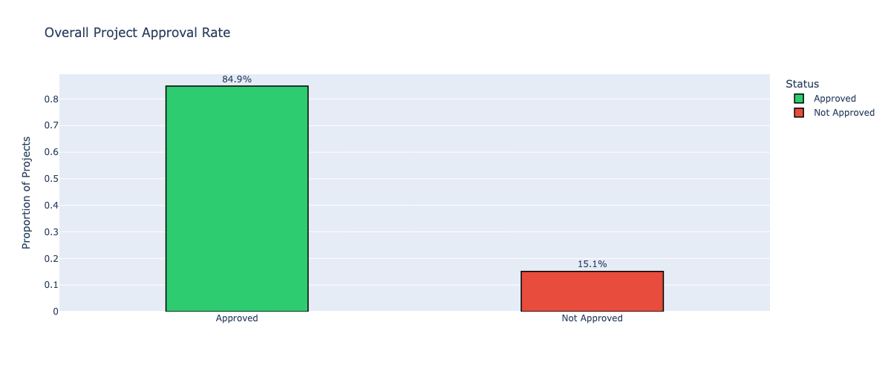
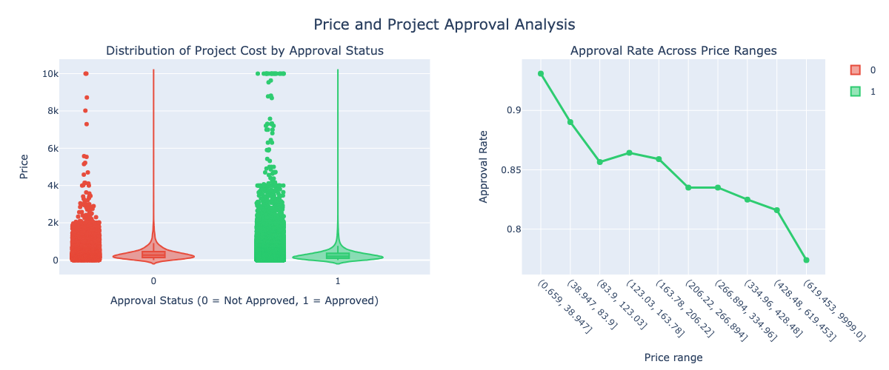
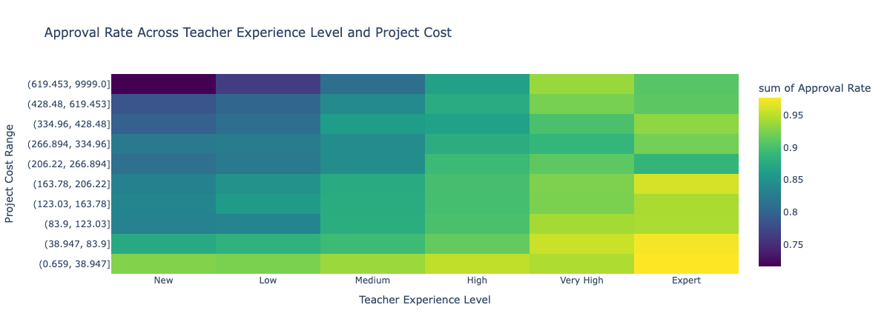
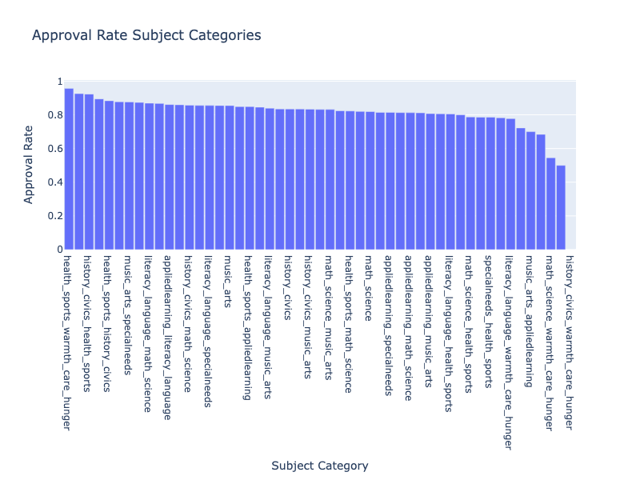
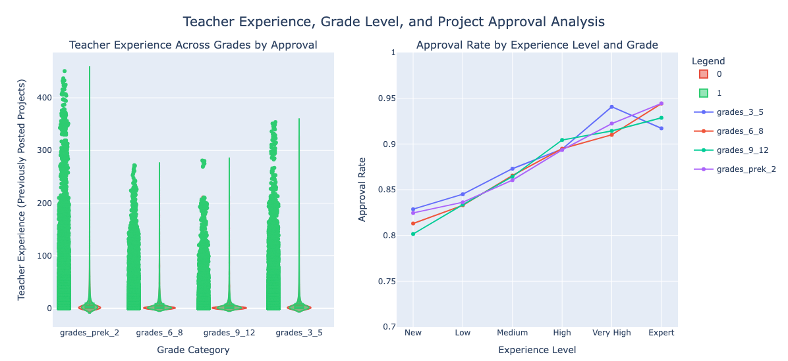

Funding the Gap: What Drives Project Approval on DonorsChoose?
Introduction
DonorsChoose is a widely used platform that enables teachers across the United States to request funding for classroom projects.
These requests span a wide range—from low-cost essentials such as books and stationery to larger investments in technology, science equipment, and specialized learning resources.
At first glance, the platform appears highly accessible: most submitted projects are eventually approved.
However, a high overall approval rate can hide important inequalities.
Behind the headline number lies a meaningful subset of projects that repeatedly struggle to receive funding.
For these classrooms, rejection is not merely a statistical outcome—it often translates into unmet student needs and unequal access to educational resources.
This project, titled “Funding the Gap”, investigates where these hidden barriers arise.
Rather than asking whether DonorsChoose works in general, the analysis asks a more precise question:
which types of projects face structural disadvantages, and why?
Using historical DonorsChoose data, the analysis explores how approval outcomes vary with project cost, scale, teacher experience, grade level, and subject category.
These factors act as proxies for deeper constraints—such as budget pressure, proposal quality, and donor preferences—that may systematically favor some classrooms over others.
The objective is not to evaluate individual teachers or projects, but to identify consistent patterns that shape funding outcomes.
By making these patterns visible, the analysis aims to inform more equitable platform design, better support for new teachers,
and more impactful decision-making by donors.
Business Questions
To understand what drives project approval on DonorsChoose, the analysis focuses on the following questions:
Which project characteristics most strongly influence approval outcomes?
How do project cost and requested quantity affect approval likelihood?
Does teacher experience improve the chances of project success?
Are certain subject categories consistently advantaged or disadvantaged?
Overall Approval Landscape

Approximately 85% of projects on DonorsChoose are approved.
At a platform level, this suggests that most teachers are eventually able to secure funding for their classroom needs.
On the surface, DonorsChoose appears to function as an inclusive and effective funding mechanism.
Why this number can be misleading:
An overall approval rate of 85% still implies that roughly 1 in 7 projects is not approved.
Given the scale of the platform, this translates into thousands of unfunded classrooms.
A high average can mask disparities if certain types of projects are consistently overrepresented
among the rejected cases.
Approval, therefore, should not be viewed as a simple yes-or-no outcome,
but as a process shaped by project characteristics and constraints.
This chart establishes a baseline rather than a conclusion.
The key question is no longer whether projects are approved in general,
but which projects struggle the most—and what patterns explain those struggles.
The sections that follow unpack this question by examining cost, scale, experience, and subject-level differences.
Does Project Cost Influence Approval?

Project cost emerges as one of the strongest constraints on approval likelihood.
While DonorsChoose does not explicitly reject projects based on price alone,
approval rates decline steadily as project cost increases.
Lower-cost projects consistently achieve higher approval rates,
indicating that financial scale plays a critical role in funding decisions.
How to read this plot (with examples):
The left panel compares the cost distribution of approved and rejected projects.
The overlap shows that expensive projects can still be approved,
but they are less common among successful outcomes.
The right panel shows approval rate across increasing price ranges.
As we move from left to right, approval rates decline in a near-monotonic pattern.
For example, projects in the lowest cost range maintain approval rates above 90%,
while projects in the highest cost range fall closer to 75–80%.
This pattern suggests that donors and reviewers favor projects with clearer cost–impact tradeoffs.
Cost alone does not determine approval, but it sets an upper bound on what is likely to succeed.
As budgets grow, projects must overcome increasing skepticism, regardless of their educational value.
The Role of Teacher Experience
Teacher experience is positively associated with project approval.
Projects submitted by teachers with prior successful submissions are approved at higher rates,
suggesting that familiarity with the platform, clearer proposal framing, and realistic budgeting
increase the likelihood of success.
How to read this plot (with examples):
The x-axis represents increasing levels of teacher experience on DonorsChoose,
measured by the number of previously submitted projects.
Approval rates rise steadily as experience increases,
especially when moving from first-time teachers to moderately experienced ones.
For example, teachers in the lowest experience group have noticeably lower approval rates,
while experienced teachers consistently perform above the platform average.
Experience clearly helps teachers navigate the platform more effectively.
However, this advantage alone does not guarantee success—especially for projects with large budgets.
Cost and Experience: An Interaction Effect

When project cost and teacher experience are examined together,
a clear interaction emerges.
While experienced teachers generally achieve higher approval rates,
high-cost projects face lower approval regardless of experience level.
How to read this heatmap (with examples):
The horizontal axis represents teacher experience,
from new teachers on the left to highly experienced teachers on the right.
The vertical axis represents increasing project cost ranges.
In the lowest cost range, approval rates remain high across all experience levels,
including first-time teachers.
In the highest cost range, approval rates drop sharply,
even for the most experienced teachers.
This interaction shows that teacher experience can improve outcomes,
but it cannot fully offset the negative impact of very high project costs.
Once budgets exceed a certain threshold, cost becomes the dominant constraint on approval.
Project Scale: Quantity and Price Combined
This visualization combines project quantity, total cost, and approval outcomes into a single view.
Bubble size represents the number of projects in each price–quantity group,
while color indicates the approval rate.
How to read this plot (with examples):
The x-axis represents the quantity of items requested,
while the y-axis represents the total project cost.
Each bubble represents a group of projects with similar quantity and cost.
Larger bubbles indicate that more projects fall into that category.
Green bubbles indicate higher approval rates,
while orange/red bubbles indicate lower approval rates.
The bottom-left region (low quantity, low cost)
contains the largest and greenest bubbles,
showing that these projects are both common and highly likely to be approved.
In contrast, the top-right region (high quantity, high cost)
contains smaller, redder bubbles,
indicating fewer projects and the lowest approval probabilities.
Overall, the plot shows that approval likelihood decreases sharply as projects grow larger in both
scale and budget. Approval decisions are therefore sensitive to the combined burden of quantity
and cost—not either factor in isolation.
Differences Across Subject Categories

Approval rates vary noticeably across subject categories.
Some subjects consistently perform above the overall average,
while others lag behind despite having similar cost and scale characteristics.
How to read this plot (with examples):
Each bar represents a subject category,
with height indicating the approval rate for projects in that subject.
Categories toward the top of the chart have approval rates well above the overall average,
indicating strong donor and reviewer support.
Categories near the bottom fall significantly below the average,
meaning a larger share of these projects fail to get funded.
For example, subjects related to core academics and classroom essentials
tend to have higher approval rates,
while some specialized or enrichment-focused subjects
struggle more frequently.
These differences suggest that approval outcomes are influenced not only by project quality or feasibility,
but also by donor preferences and perceived urgency of certain subjects.
As a result, some educational needs may be systematically underfunded.
Approval Patterns Across Grade Levels
Approval rates differ across grade categories, indicating that projects targeting students of different ages do not face the same likelihood of success.
Projects aimed at younger students tend to receive higher approval rates than those designed for older grade levels.
How to read this plot (with examples):
Each bar represents a grade category,
with height showing the approval rate for projects targeting that group.
Projects for early and elementary grades appear toward the top of the chart,
indicating stronger approval performance.
Approval rates gradually decline for middle school and high school projects,
placing them closer to or below the overall average.
For example, a classroom request for early grades is more likely to be approved
than a similarly scoped request aimed at high school students.
This pattern suggests a donor preference toward early education,
where contributors may perceive their impact as more foundational.
However, it also raises concerns about whether older students face unintended disadvantages in accessing classroom resources.
How Cost Impacts Approval Across Grade Levels
Approval rates decline with increasing project cost across all grade levels,
but the magnitude of this decline differs substantially by student age group.
Projects for older grades experience sharper drops in approval as costs rise.
How to read this plot (with examples):
The x-axis represents increasing project cost ranges,
while the lines correspond to different grade categories.
All grade levels start with relatively high approval rates at lower costs,
showing that affordable projects are broadly supported regardless of student age.
As cost increases, approval rates decline for every grade,
but the decline is steepest for middle school and high school projects.
For example, a high-cost project for elementary grades still maintains a moderate approval rate,
while a similarly priced project for high school students drops much closer to the bottom of the chart.
This pattern suggests that older-grade projects are doubly constrained:
they tend to require higher budgets and face stricter approval thresholds.
As a result, cost amplifies existing disadvantages for projects serving older students.
Teacher Experience and Approval Across Grade Levels

Teacher experience improves approval likelihood across all grade levels,
but its impact varies depending on the age group being served.
Experience helps most at moderate cost and complexity, but cannot fully offset structural disadvantages.
How to read this plot (with examples):
The x-axis represents increasing teacher experience levels,
while different lines correspond to grade categories.
Approval rates generally increase as teachers gain experience,
reflecting improved proposal writing and platform familiarity.
The improvement is most pronounced for elementary and middle school projects,
where experience leads to clear gains in approval probability.
For high school projects, approval rates remain comparatively lower
even as teacher experience increases.
This suggests that experience helps, but does not fully overcome grade-related disadvantages.
Overall, experience acts as a partial equalizer.
It improves outcomes for all teachers, but structural factors—such as higher costs and donor preferences—
continue to limit approval rates for projects serving older students.
What Drives Approval (and What Doesn’t)
No single numeric factor strongly determines project approval on DonorsChoose.
Most measurable features show only weak linear relationships with approval outcomes.
How to read this heatmap (with examples):
Each cell shows the correlation between a numeric feature
(such as cost, quantity, or teacher experience) and project approval.
Values near +1 indicate strong positive relationships,
values near -1 indicate strong negative relationships,
and values near 0 indicate little to no linear association.
Teacher experience shows a small positive correlation,
meaning experienced teachers are slightly more likely to be approved.
Project cost and quantity show weak negative correlations,
indicating that larger and more expensive projects face modest disadvantages.
The dominance of near-zero correlations confirms that approval outcomes
cannot be explained by any single factor in isolation.
Instead, approval depends on how multiple factors interact—such as cost combined with experience,
grade level, and subject category—along with qualitative elements not captured in numeric data.
Key Insights
Project approval is shaped by multiple interacting factors.
No single variable—cost, experience, quantity, or subject—determines success on its own.
This is supported by the correlation heatmap, which shows only weak linear relationships for all numeric features.
Cost is the strongest constraint on approval.
Across price-based trends and interaction plots, approval rates decline steadily as project budgets increase.
Even experienced teachers face lower approval probabilities for high-cost requests.
Teacher experience improves outcomes, but with diminishing returns.
Experience consistently raises approval rates, particularly for low- and mid-cost projects.
However, experience cannot fully overcome disadvantages associated with high cost or large project scale.
Project scale matters more in combination than in isolation.
Quantity or cost alone does not fully explain rejection.
Projects that are both large in quantity and high in total cost face the lowest approval rates.
Structural patterns persist across grades and subjects.
Certain grade levels and subject categories consistently receive lower approval rates,
even after accounting for experience and cost, indicating systemic rather than individual disadvantages.
Recommendations
Provide structured onboarding and proposal guidance for new teachers.
Since teacher experience consistently improves approval likelihood,
DonorsChoose should offer guided templates, examples of successful proposals,
and budget-planning tools to help first-time teachers avoid common pitfalls.
Encourage realistic project scoping and cost planning.
Approval rates decline sharply as project cost increases.
Introducing budget feedback tools or soft cost caps can help teachers
align requests with funding patterns that historically perform well.
Introduce targeted support for high-cost but high-impact projects.
High-cost projects face approval barriers regardless of teacher experience.
Dedicated review tracks or matching programs could prevent important
but expensive initiatives from being systematically disadvantaged.
Increase visibility for consistently underfunded subjects and grades.
Subject- and grade-level disparities suggest donor attention is uneven.
Rotating spotlights or equity-focused campaigns can help redirect funding
toward classrooms that historically struggle to receive support.
Use interaction-aware monitoring instead of single-metric thresholds.
Because approval depends on combinations of factors rather than any one variable,
monitoring systems should track interactions between cost, experience, grade, and scale
rather than relying on isolated metrics.
Why This Matters
Classroom resources play a critical role in shaping students’ learning experiences.
When certain types of projects, subjects, or classrooms consistently struggle to receive funding,
the result is not just a rejected proposal—it is a missed educational opportunity.
This analysis shows that approval gaps are not driven by individual teacher effort alone.
Structural factors such as project cost, scale, grade level, and donor preferences
systematically influence which classrooms receive support.
As a result, teachers serving older students, proposing larger projects,
or working in less popular subject areas face persistent disadvantages.
By identifying these patterns, DonorsChoose and its donor community can make more informed,
equitable decisions.
Targeted interventions—such as better support for new teachers,
greater visibility for underfunded projects, and alternative pathways for high-cost initiatives—
can help ensure that funding reaches classrooms based on need and impact rather than visibility alone.
More broadly, this project demonstrates how data storytelling can reveal hidden inequities
within well-intentioned systems and provide a foundation for more transparent,
fair, and effective allocation of educational resources.
Next Experiments
Analyze proposal text quality and clarity.
Future work could examine how writing style, structure, and sentiment
influence approval outcomes, helping distinguish strong proposals from weaker ones.
Study time-to-approval across project types.
Measuring how long different projects take to get approved
could reveal additional bottlenecks affecting high-cost or underfunded categories.
Incorporate school- and district-level context.
Adding geographic and school-level data—such as poverty indicators or district funding levels—
would allow a deeper investigation into whether approval gaps reflect broader systemic inequities.
Build early-warning models for at-risk projects.
Predictive models could help flag projects with low approval probability
and provide real-time feedback to teachers before submission.
Evaluate the impact of targeted interventions.
If new support mechanisms or donor campaigns are introduced,
future analysis could assess whether these changes successfully reduce approval disparities.
Executive Summary
This project analyzes over one hundred thousand DonorsChoose classroom funding requests
to understand why some projects are approved while others struggle to receive funding.
Although the overall approval rate is high, approval outcomes vary systematically across
project cost, scale, subject type, grade level, and teacher experience.
The analysis shows that project cost and scale are the strongest constraints on approval,
while teacher experience improves outcomes but cannot fully overcome structural disadvantages.
Certain subjects and grade levels consistently receive lower approval rates,
suggesting that donor preferences and platform dynamics play a significant role
in shaping which classrooms receive support.
Together, these findings highlight that funding gaps on DonorsChoose are driven less by
individual teacher effort and more by systemic factors.
Addressing these gaps requires targeted support, better proposal guidance,
and equity-focused platform interventions.